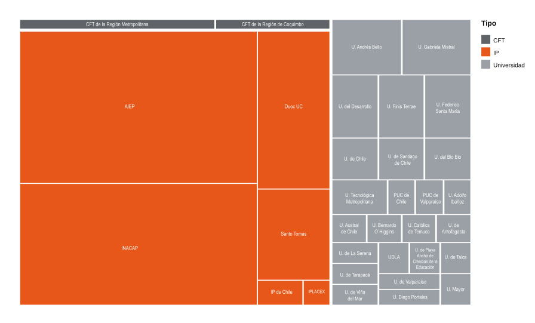

En Chile, estudiar Diseño puede significar cosas muy distintas. Bajo un mismo nombre conviven programas que cuestan menos de dos millones de pesos al año y otros que superan los diez; carreras de cuatro semestres y otras de diez; instituciones con siete años de acreditación junto a otras que operan bajo tutela.
Revisamos 188 programas de Diseño impartidos por 33 instituciones del sistema de educación superior. Al ordenarlos según quién los dicta (universidades, institutos profesionales (IP) o centros de formación técnica (CFT)) aparece un patrón: el título de Diseñador no es uno solo, sino un conjunto de productos educativos fragmentado por el tipo de institución que lo ofrece.
Este reportaje traduce visualmente esos datos oficiales para responder una pregunta: ¿qué tan distinto es lo que recibe quien estudia Diseño según dónde lo haga?
¿Quién imparte Diseño en Chile?
La oferta no se reparte de forma pareja. De los 188 programas, la gran mayoría está en manos de institutos profesionales, mientras las universidades y, sobre todo, los centros de formación técnica ocupan un espacio menor.
Los IP concentran 141 de los 188 programas (75%), seguidos por 41 universidades (22%) y apenas 6 CFT (3%). A esto se suma una fuerte centralización geográfica: 75 programas (casi 4 de cada 10) se imparten en la Región Metropolitana.
Una misma carrera, muchos nombres y sedes
Más allá del conteo, la oferta se dispersa en variantes: "Diseño"», "Diseño Gráfico", "Diseño Gráfico Digital", "Ingeniería en Diseño", bachilleratos y técnicos. El siguiente mapa de árbol muestra cómo se distribuye el catálogo completo entre tipos de institución y sus sedes.

El tamaño de cada bloque revela la concentración: unos pocos IP de gran tamaño (AIEP e INACAP suman más de la mitad de la oferta) sostienen el catálogo, mientras decenas de programas universitarios se reparten en bloques pequeños y heterogéneos.
¿Garantiza lo mismo el título según quién lo entregue?
Aquí aparece la asimetría más nítida. Al cruzar el tipo de institución con su acreditación, las trayectorias se separan: los 6 CFT operan todos bajo tutela, sin acreditación vigente; los IP se dividen casi por mitades entre 5 y 7 años; y las universidades se dispersan por todo el rango, desde 4 hasta 7 años.

El gráfico deja ver que la calidad certificada no depende del nombre de la carrera, sino del tipo de institución y, muchas veces, de su ubicación. El sello "Diseñador" promete lo mismo, pero el respaldo institucional detrás varía enormemente.
¿Cuánto cuesta el mismo título según dónde se estudie?
La fragmentación se vuelve más concreta al mirar el arancel. Normalizando todos los valores a pesos (UF a $40.796), el contraste es marcado:
Una universidad cobra en promedio $6,1 millones anuales, frente a $2,9 millones de un IP y $2,2 millones de un CFT: estudiar Diseño en una universidad cuesta más del doble que en un IP. Y los extremos son aún más amplios: desde $1,82 millones en un técnico de IP hasta $10,4 millones en un bachillerato universitario.
A esa brecha de precio se suma una de tiempo y de grado: los técnicos de IP duran cuatro semestres y los profesionales ocho, mientras las universidades llegan a nueve o diez. Y solo las universidades entregan Profesional con Licenciatura, un grado que ni IP ni CFT ofrecen. El mismo nombre encubre títulos jurídicamente distintos.
Conclusiones
Los datos confirman la hipótesis: "Diseñador" es un título fragmentado. Bajo un nombre compartido, el sistema chileno ofrece productos que difieren en costo (de 1,8 a 10,4 millones), duración (de cuatro a diez semestres), acreditación (de bajo tutela a siete años) y hasta en el grado académico que otorgan.
Esa fragmentación no es neutra: La tarea de descifrar qué hay realmente detrás de cada oferta. Dos personas pueden egresar como diseñadoras tras recorridos formativos, económicos y de respaldo institucional radicalmente distintos.
Para quien decide, la lección es clara: el nombre de la carrera dice poco; lo que define el valor del título es el tipo de institución, su acreditación y el grado que entrega. Esos son los datos que conviene mirar antes que el rótulo.
Explora el catálogo completo
Los 188 programas de Diseño del sistema. Filtra por institución, región o tipo y compara por ti mismo:
| N° | Carrera | Institución | Tipo | Acreditación | Región | Arancel |
|---|
Fuentes
Servicio de Información de Educación Superior (SIES). Bases de datos de la Oferta Académica.
Comisión Nacional de Acreditación. Acreditación Institucional.
Subsecretaría de Educación Superior. Acceso a la Educación Superior.
Banco Central de Chile. Valor de la UF.
Catálogo de Visualización de Datos. Conjuntos paralelos y mapa de árbol.